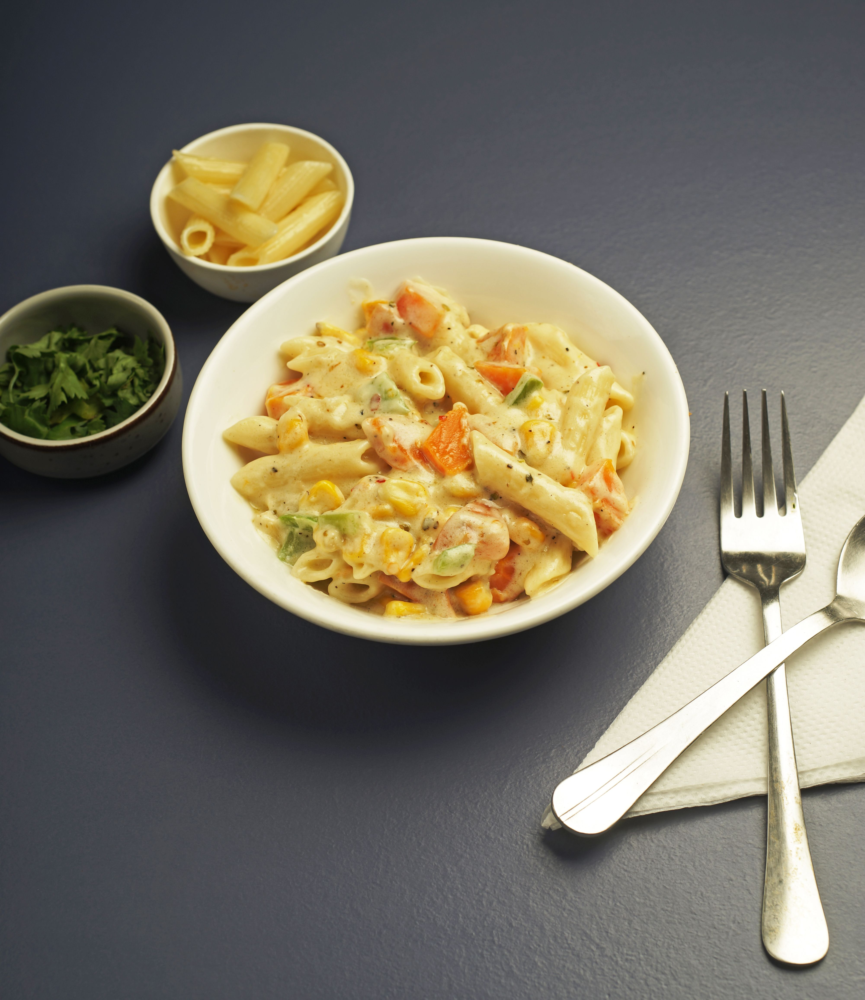

White Sauce Pasta

Description
White Sauce Pasta is simply cooked pasta mixed with a silky smooth & decadent white sauce made of milk, butter and flour.
It is also Known as Bechamel Sauce has its origin from the Italian & French Cuisines. In classic culinary terms, this is what is known as a mother sauce.
Once you have learned how to make it well, the options are really endless.
Whether you are using it for pasta or as a base for macaroni and cheese, the end is always delightfully rich, smooth consistency that you coaxed out of a simple sauce of flour, butter and milk.
Ingredients
- 1 cup (100 grams) pasta (penne or macaroni)
- 1 1/2 cup milk (full fat or plant milk)
- 2 tablespoons butter + 1/2 tablespoon oil or butter (to saute veggies)
- 1/4 cup heavy cream or 2 to 3 tablespoons cheese (optional, parmesan,cream cheese, mozzarella or cheddar)
- 1 1/2 tablespoon all-purpose flour
- 1/4 tablespoon black pepper
- 2 garlic cloves grated
- 1/2 teaspoon oregano
- salt as needed
- 1/2 tabelspoon red chili flakes
Steps
- Bring 4 cups of water to a rolling boil in a large pot. Add pasta and 1/4 teaspoon salt.
- Cook on a medium high flame till al dente. Check the instructions on the pasta package for the correct cook time. Check them a minute earlier than mentioned on the package. They must be tender, firm and chewy but not mushy. Mine takes about 9 mins.
- Reserve about 1/4 cup pasta cooked stock.
- Drain the pasta to a colander. Cover and keep aside.
- Pour 1/2 tbsp oil or butter to a pan. Add the vegetables and saute the, on a medium high heat until slightly tender yet crunchy. This takes me about 5 to 6 mins. Remove to a plate and set aside.
- Melt 2 tbsp butter and minced garlic and fry for 30 to 40 sec on a medium heat.
- Stir in all-purpose flour.
- Saute well until the flour loses the raw smell, for about a minute. Don't brown the flour. Since this is a small quantity, the roux can become dry and clumpy. It's just fine. Turn off the stove/heat and slowly pour 1/2 cup milk while you stir to incorporate the milk into the roux.
- Keep whisking till it looks creamy & uniform to prevent formaing lumps. Pour the rest of the milk and stir well.
- Turn on the heat and cook on a medium-low until the white sauce becomes thick. Keep stirring/whisking & scrape the sides for a uniform sauce through out.
-
Pour the heavy cream or cheese and mix well.
- Add vegetables and the cooked pasta & mix well.
- Add pepper, oregano and chili flakes.
Home